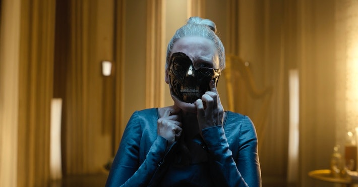

Ever since the launch of Apple TV+, Apple has been playing catch up. As the company forays into the world of streaming, it goes up against incredibly stiff competition from Netflix, Hulu, Amazon Prime Video and HBO Max. All of these services have a hit show: Netflix has Stranger Things, and HBO has Game of Thrones.
Apple has long lacked an epic drama that can really draw viewers in. However, Apple is looking to change that with Foundation, a sci-fi epic that premiered on the service Sept. 24.
In just the first two episodes, the series showcased its impressive scale and design, with some of the best art direction for a sci-fi show in recent history. But while it does a great job of setting up a sense of high stakes, it struggles to develop meaningful characters and often gets bogged down by a black box of math.
Based on the Isaac Asimov novels of the same name, Foundation takes place in a world where a central government, known as the Galactic Empire, rules over a vast kingdom that spans multiple planets and the far reaches of space. A mathematician named Hari Seldon, played by Jared Harris, uses a model to predict that the Empire will collapse imminently, resulting in vast repercussions.
Foundation’s world building and art design are immediately eye-catching and visually arresting. Gorgeous planet backdrops, futuristic ship and costume design, as well as very stylized cities, are all beautiful to look at and compliment the show’s sci-fi roots.
It feels like an excellent blend of Star Wars and Star Trek, as well as having its own original elements. The sense of scale here is also incredible; the Empire really does feel all-powerful, like a force that could take out planets if it wanted to.
Although the first episode starts off quite slow, the stakes are quickly elevated, and by the second episode, I was dying to see what would happen next. Rather than going small, Foundation plays to its strengths and is not afraid to go off the beaten path to shock the viewer.
The most glaring issue with Foundation, however, is easily the characters. The character development is extremely weak; I could not find myself particularly interested in any characters apart from Hari Seldon and Lee Pace’s Brother Day.
These actors carry a great deal of screen presence and charisma to their roles, and rule the screen anytime they’re on it. The rest of the cast, however, including the lead, fail to make any sort of meaningful impression with the audience.
Some side characters are able to remedy this somewhat with both creative costume design and interesting cultural backgrounds, but the main characters, in particular, find no way around this.
The first two episodes are also slowed down with way, way, too much math. The main character is frequently found reciting prime numbers, the professor often talks about complicated mathematical formulas and theorems and it all feels like a waste when there’s a motherload of cool sci-fi concepts to explore just around the corner.
It’s not that the math is useless; after all, the show does hinge on a mathematical model used to predict the downfall of civilization. But the different mathematical concepts are never actually explained.
It’s a black box used to drive the narrative forward, supporting the claims made to give everything meaning, but the viewer never actually learns how any of it works. The best comparison is the Force in Star Wars; the viewer never really understands how it works at the lowest level; they just use their imagination and run with it. The issue here is that instead of briefly mentioning the math and moving on, the first two episodes get stuck in it, with long monologues and scenes of “computation” that just make no sense to the viewer. It’s a flaw that seems to be reduced in the second episode compared to the first, and I only hope it gets better in the rest of the series.
Despite its flaws, I really did enjoy the first two episodes. The art design, scale, sense of exploration and mystery have me hooked on the show, and I love how grand and epic the stakes feel. Foundation has a lot of potential, and with some more action and better character development, I think it could be the next big drama.
Read from source